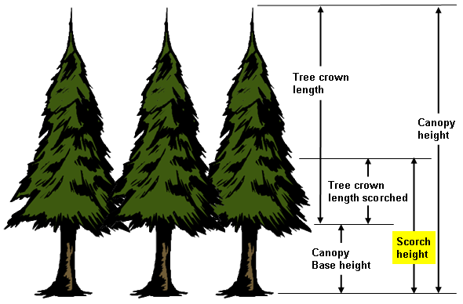

|
|
Scorch Height |
Scorch height is the height above the ground that the temperature in the convection column reaches the lethal temperature to kill live crown foliage. This temperature is assumed to be 140 degrees Fahrenheit (60 Celsius).
If both SURFACE and SCORCH modules are selected, midflame wind speed and the flame length in the direction of the spread calculation are used as input to SCORCH.
|
I/O |
Module |
If |
Notes |
|
Input |
MORTALITY |
If SCORCH is not selected. |
If both MORTALITY and SCORCH are selected, then the scorch height calculated in scorch is used in MORTALITY. |
|
Output |
SCORCH |
|
|
|  |